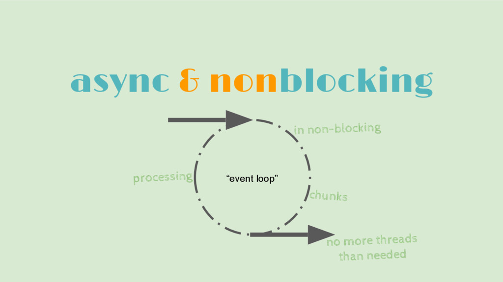

Reactive
Agenda
- Reactive programming in Java
- Reactive streams
- Project reactor
- Spring's WebFlux and WebClient
Reactive programming
- Reactive programming is a paradigm to develope
asynchronousandnon-blocking. - Main part of reactive programming is stream of data which we can observe, work with or even apply back pressure.
- Help us to create flexible, loosely-coupled, and scalable software.

Reactive streams / Java libraries
- Reactive Streams is a community initiative to provide a standard for asynchronous stream processing with non-blocking backpressure.
- There are several specification implementation RxJava, Akka Streams, Project Reactor, etc
- Reactive streams specification is semantically equivalent to the Java Flow library.
- Can be used interchangeable.
Project Reactor
- "Reactor is reactive library, based on the Reactive Streams specification, for building non-blocking applications on the JVM"
- It is usead as a base of reactive stack in Spring Boot
- Interacts with Java's functional API, CompletableFuture, Stream, and Duration
- Well-suited for a microservices architecture, Reactor offers backpressure-ready network engines for HTTP (including Websockets), TCP, and UDP
- Reactor offers two reactive and composable APIs, Flux [N] and Mono [0|1]
Flux<Integer> just = Flux.just(1, 2, 3, 4);
Mono<Integer> just = Mono.just(1);
Publisher<String> just = Mono.just(1);
Subscribing to a Stream
List<Integer> elements = new ArrayList<>();
Flux.just(1, 2, 3, 4)
.log()
.subscribe(elements::add);
Comparison to Java 8 Streams
- Does it is the same?
List<Integer> collected = Stream.of(1, 2, 3, 4)
.collect(toList());
- No. This is push vs pull. In a reactive approach, events are pushed to the subscribers as they come in.
- In Java Streams terminal operator pull all the data and return it. With Reactive we could have an infinite stream coming in from an external resource.
WebFlux
- Spring WebFlux is reactive-stack web framework added in Spring 5.0
- It is fully non-blocking, supports Reactive Streams back pressure, and runs on such servers as Netty, Undertow, and Servlet 3.1+ containers
- At the programming-model level, Java 8 enabled Spring WebFlux to offer functional web endpoints alongside annotated controllers
@GetMapping("/{id}")
private Mono<Employee> getEmployeeById(@PathVariable String id) {
return employeeRepository.findEmployeeById(id);
}
WebClient
- WebClient is a non-blocking client with support for reactive streams.
- It has a functional, fluent API based on Reactor
WebClient client = WebClient.create("https://example.org");
Mono<Person> result = client.get()
.uri("/persons/{id}", id)
.accept(MediaType.APPLICATION_JSON)
.retrieve()
.bodyToMono(Person.class);
Hands-on
Repository on github https://github.com/devonfw-java-advanced/reactive contains branches: